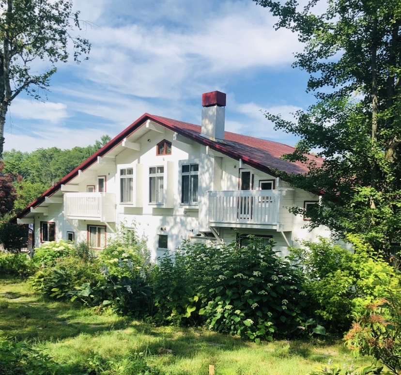
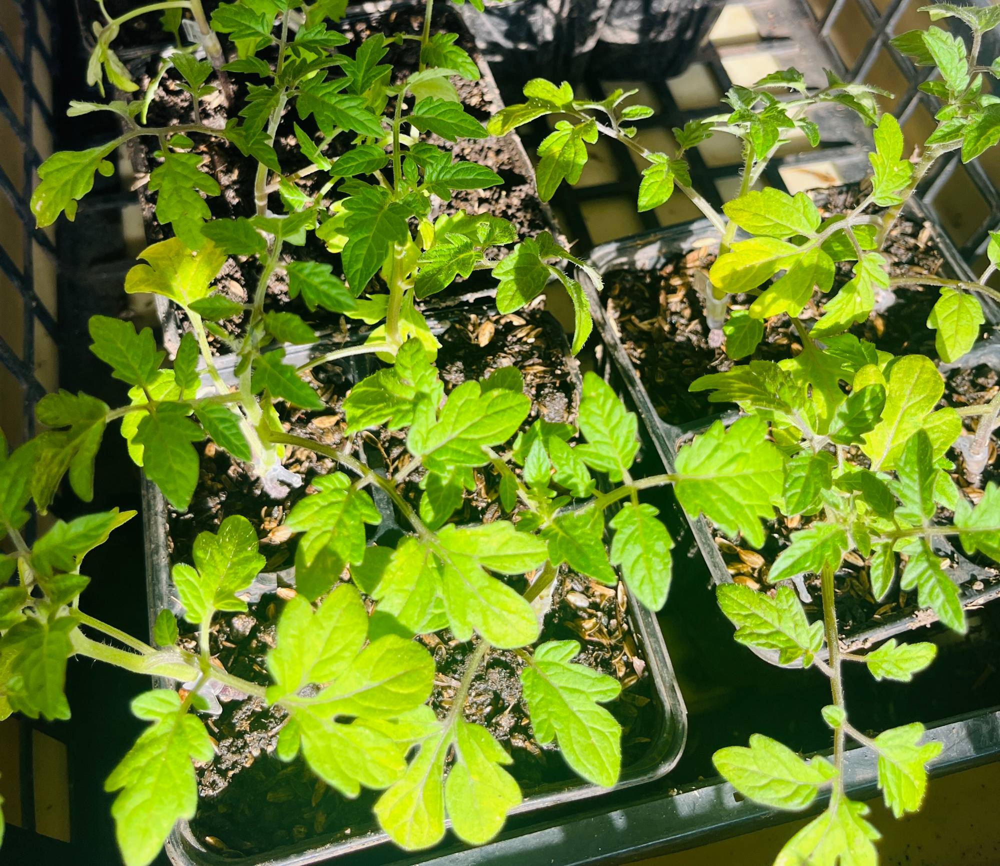
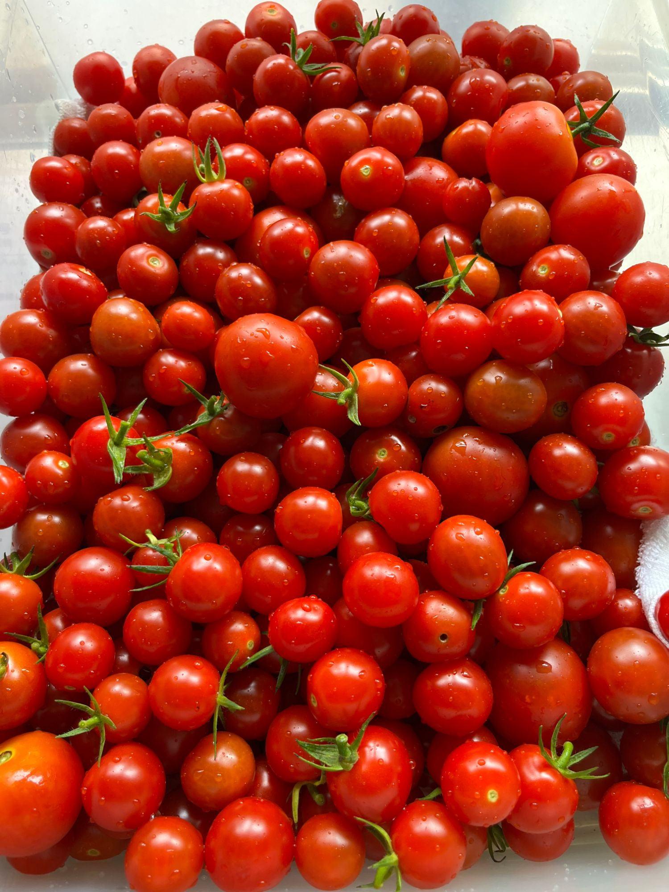
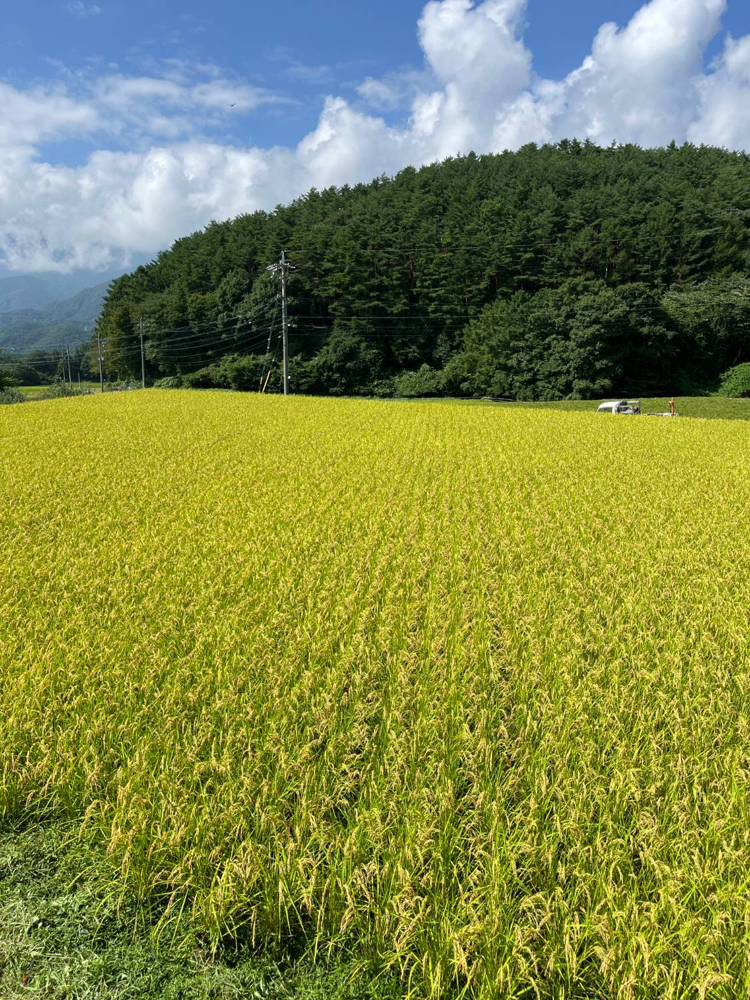

2026年度 募集終了 ／ 2027年度 案内受付中
大自然に畏敬の念を持ち
天の恵みを見極め
日本の伝承文化復活
八ヶ岳原村。自然農・醗酵・野草・ミネラル食を、1泊2日〜3泊4日の合宿で心身に落とし込む一年間。
「安心は探すものではなく、見極め育てるもの」
安心を自給する生き方、天給自足実践塾です。

拠点：café & stay レジオン八ヶ岳（長野県諏訪郡原村）
Our Schools
レジオン八ヶ岳の学び舎
大自然の恵みを生活に落とし込む、実践の場です。氣になる学び舎から、じっくりご覧ください。
天給自足実践塾
自然農・醗酵・野草・ミネラル食を、1年間の合宿で心身に落とし込む講師養成講座です。
くわしく見る → 02醗酵実践塾
糀・味噌・縄文漬け・甘酒・シードルなど、醗酵を集中して学ぶ2泊3日のリトリートです。
くわしく見る → 03菊芋活用実践塾
自然農で菊芋を栽培し、究め、楽しむ。食の安心を菊芋の活用から実践します。
くわしく見る → 04野草を生活に落とし込み楽しむ会
野草研究家・みこたまさん（加藤好美さん）を講師に迎え、見極めと活用を学ぶ2泊3日。
くわしく見る → 05食（醗酵、野草など天の恵みを活かす）の持ち味を活かす調理と醗酵で未来を創る奇跡のリトリート。
ミネラル、酵素の重要性を知り、天然の香りを活用して、生活習慣まで落とし込み、自然の力を体感するワンデー、1泊2日、2泊3日の3タイプの合宿リトリートです。

初夏、庭の紫陽花が咲きほこる頃のレジオン八ヶ岳。
Four Seasons
八ヶ岳の四季を巡る、大自然の恵み
春夏秋冬、八ヶ岳が見せる表情とともに、天給自足を一年かけて心身に落とし込みます。

春
植え付けと芽吹き
陸稲・自然農野菜の植え付け、菊芋の種芋植え。八ヶ岳に新緑が萌える季節です。

夏
野草と青空
野草を見極める力を養い、畑仕事と収穫。焚火を囲み、高原の夏を楽しみます。

秋
醗酵ときのこ狩り
糀・味噌・甘酒などの醗酵を学び、色づく森できのこを探す実りの季節です。
冬
雪山と満天の星
菊芋掘りと冬山散策。空氣の澄んだ夜は、満天の星空が広がります。
天給自足実践塾で健康、心の平安、食の安心、自然の恵みの見極め、
平安清明の自然の循環を生活に落とし込み、楽しみ、
醗酵生活（委ねる・待つ・信じる）を理解し伝承しませんか。
ひとり一人がパワースポットとなり、伝承者として日本の叡智を広げてゆきましょう。